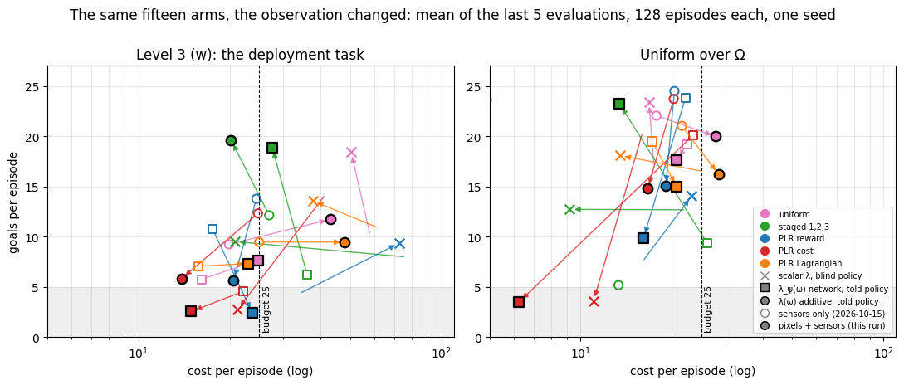
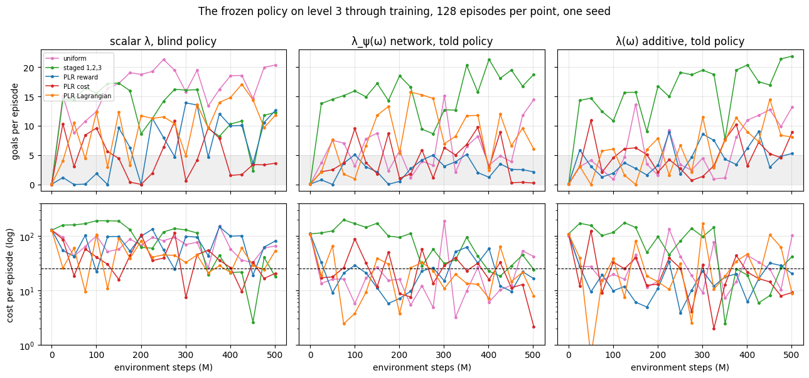
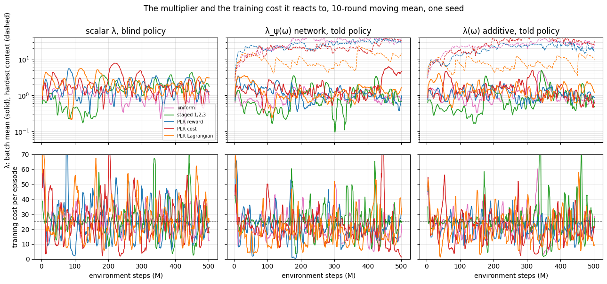

Done 2026-10-17 on Snellius: 15 arms in parallel, 5 h 30–44 each on an A100,
~10,900 SBU. W&B group goal_point_learners_vision_500M, one seed, commit
6bc54c7 (branch contextual-review). The same arms, flags and budget as
2026-10-15_goal_point_learners_500M.md, with the observation changed; that
report is the comparison throughout.
In one paragraph. With a camera next to the sensors, the per-context
constraint still holds the level-3 budget where the scalar one does not (7 of 10
told arms end within 25, 2 of 5 scalar arms, one of them standing still), but the return it buys changed
sides: the staged:1,2,3 told arms, unreadable on 2026-10-15 and now clean,
end at 19–20 goals on level 3 at cost 20–28 and 23–24 goals on Ω — the best
policies of either experiment — while the uniform and PLR told arms, the best
of 2026-10-15, end at 2–12 goals and none of the eight is both above 8 goals and
under budget. Every arm's evaluations swing two to five times further between
consecutive evaluations than two days ago, far more than the sampling error of
128 episodes, and the multiplier oscillates with a 20–40 M-step period: the
frozen policy is a different policy at every evaluation. This run changed two
things at once — the observation, and (through 1024 environments instead of
8192) the number of multiplier updates per environment step, eight times more —
and cannot say which did what; the next run must separate them.
2026-10-15 ended with the learner settled (per-context λ(ω), told policy) and a failure it could only make rarer, not remove: the lidar cannot tell a flat disc from a solid cylinder, so the policy presses into walls it cannot see as walls (plan item 7). A camera carries that fact. Does the same experiment from pixels plus sensors keep the budget on level 3, and does the return under the budget go up now that the observation contains what decides the costly episodes? The normaliser fix (plan item 2) is in this run, so the two staged-told rows are read for the first time.
PPO-Lagrange, safe_goal_point, episodes of 1000 steps, budget 25, 21
evaluations of 128 episodes on level 3 (w), on Uniform(Ω) and on Ω₂. The policy
observes {sensors, context, pixels/vision}: a 64 × 64 egocentric camera,
three frames stacked, through one Nature-CNN encoder shared by the policy and
both critics, next to the sensors (design/contextual_learner.md §2;
training/contexts/networks.py). Learners and distributions as on 2026-10-15.
What differs from that run, besides the observation, is the batch shape the
renderer's memory forces:
| 2026-10-15 (sensors) | this run (pixels + sensors) | |
|---|---|---|
| environments | 8192 | 1024 |
| minibatches × updates | 32 × 4 | 4 × 4 |
| steps per round | 655 360 | 81 920 |
| rounds in 500 M | 763 | 6104 |
| multiplier updates per 100 M steps (rate 1 per round) | 153 | 1221 |
| SGD steps per 100 M steps | 19 500 | 19 500 |
| steady throughput | 93 k SPS | 26.8 k SPS |
| wall per arm | 1 h 51 | 5 h 40 |
.venv/bin/python -m training.experiments.snellius scripts/experiments/goal_point_learners_vision_500M.py \
--partition gpu_a100 --time 08:00:00
# COMMON: --env_name safe_goal_point --alg ppo_lag --deployment_distribution level:3
# --initial_lambda_lagr 0.1 --lagrangian_coef_rate 1
# --vision --vision_obs_mode pixels+state --gpu_memory_fraction 0.75
# --num_envs 1024 --num_timesteps 500_000_000 --num_evals 21 --episode_length 1000
# --unroll_length 20 --batch_size 1024 --num_minibatches 4 --num_updates_per_batch 4
# --record_episodes 4 --store_model true --measure_performance --skip_rollout --skip_video
Mechanics: one compiled epoch program per arm, 0 recompiles, 26.6–27.2 k SPS;
every arm leaves 252 episode records (4 episodes × 3 targets × 21 evaluations,
0.6 GB, each with the frames the policy saw) and 21 whole-learner checkpoints in
its W&B files; training.review --group goal_point_learners_vision_500M opens
the records. Figures: scripts/analysis/goal_point_learners_vision_figures.py.
The staged-told rows are clean. The context now enters every network scaled by Ω's bounds, not by running statistics (README Known defects, fixed 2026-10-16): the staged told arms score 14 goals on level 3 at their second evaluation where on 2026-10-15 they scored exactly 0.0 for fourteen.

Each arrow is one arm, from its 2026-10-15 end state (hollow) to this run's (filled); mean of the last five evaluations. The numbers:
| distribution | learner | L3 return (sensors → pixels) | L3 cost | Ω return | Ω cost | L3 ≤ budget, of 21 |
|---|---|---|---|---|---|---|
| staged 1,2,3 | additive told | 12.1 † → 19.6 | 27 → 20 | 5.2 † → 23.6 | 13 → 5 | 5 (of 7 on level 3: 5) |
| staged 1,2,3 | network told | 6.2 † → 18.9 | 36 → 28 | 9.3 † → 23.2 | 26 → 13 | 3 (of 7: 3) |
| staged 1,2,3 | scalar blind | 8.0 → 9.5 | 78 → 21 | 12.7 → 12.7 | 23 → 9 | 5 |
| uniform | additive told | 9.2 → 11.7 | 20 → 43 | 22.0 → 20.0 | 18 → 28 | 11 |
| uniform | network told | 5.7 → 7.6 | 16 → 25 | 19.2 → 17.6 | 22 → 21 | 15 |
| uniform | scalar blind | 9.9 → 18.4 | 58 → 50 | 16.8 → 23.4 | 17 → 17 | 0 |
| PLR reward | additive told | 13.8 → 5.7 | 24.5 → 21 | 24.5 → 15.0 | 20 → 19 | 16 |
| PLR reward | network told | 10.8 → 2.4 | 18 → 24 | 23.8 → 9.9 | 22 → 16 | 13 |
| PLR reward | scalar blind | 4.2 → 9.4 | 33 → 73 | 7.4 → 14.1 | 16 → 23 | 3 |
| PLR cost | additive told | 12.3 → 5.8 | 25 → 14 | 23.7 → 14.8 | 20 → 17 | 12 |
| PLR cost | network told | 4.5 → 2.5 | 22 → 15 | 20.1 → 3.5 | 24 → 6 | 11 |
| PLR cost | scalar blind | 14.4 → 2.7 | 42 → 21 | 20.6 → 3.6 | 16 → 11 | 6 |
| PLR Lagrangian | additive told | 9.4 → 9.4 | 25 → 48 | 21.0 → 16.2 | 22 → 29 | 11 |
| PLR Lagrangian | network told | 7.0 → 7.3 | 16 → 23 | 19.5 → 15.0 | 17 → 21 | 14 |
| PLR Lagrangian | scalar blind | 10.8 → 13.6 | 63 → 38 | 16.4 → 18.1 | 26 → 13 | 5 |
† the 2026-10-15 value was confounded by the normaliser defect. The staged arms' "≤ budget" count is low by construction: their first fourteen evaluations are of a policy trained on levels 1–2, at cost 100–200 on level 3.

The interactive version, trajectories.html
(open the file in a browser), plays every arm through the return–cost plane one
evaluation at a time with a fading trace, both experiments side by side (hollow:
sensors; filled: pixels); hover a point for its numbers, click a legend entry to
hide a distribution or learner. It shows what the lines above cannot: on
2026-10-15 an arm's trace drifts, here it sweeps across the plane.
| sensors (2026-10-15) | pixels (this run) | |
|---|---|---|
| mean |Δ return| between consecutive level-3 evaluations, last 15 | 0.7 – 1.6 goals | 1.3 – 5.1 goals |
| mean |Δ log cost| between consecutive evaluations | 0.11 – 0.50 | 0.49 – 1.40 |
| standard error of a 128-episode return mean | 0.1 – 0.6 goals | 0.2 – 0.4 goals |
| λ (batch mean), sd / mean over the last fifth | 0.02 – 0.22 | 0.16 – 0.60 |
| λ's dominant oscillation period | 30 – 480 M steps | 16 – 43 M steps |
| training cost per round, sd / mean, last fifth | 0.06 – 0.38 | 0.24 – 1.28 |
multiplier.png, lower
row).
training.review, camera policy: pixels/vision), the encoder's
latent reaches every head, and the composition trains at 26.8 k SPS. Whether
the policy uses them — whether the wall-pressing episodes of 2026-10-16 are
gone — is a question for the records of the staged additive arm, not yet read.--lagrangian_coef_rate is applied once per round; a run with eight times
the rounds gets eight times the dual ascent. The flag should mean the same
thing at every batch shape — scale the per-round step by the round's size, or
declare the rate per 1 M steps — and the design doc should say so.staged:1,2,3 is the best arm of either
run; with the swings unexplained it is one seed of one arm. Seeds after
item 2.trajectories.html is the honest figure for this run and belongs in every
report whose arms move between evaluations. The over-budget-fraction metric
(2026-10-15 item 6) is still owed.